地政学
マスカットはホルムズ海峡、インド洋、湾岸協力、イランとの対話、イエメン情勢を見渡す首都です。中立的な外交姿勢と海上交通の安全が、王宮と省庁の判断を日常の港湾都市に結びつけます。海路の緊張も常に意識します。
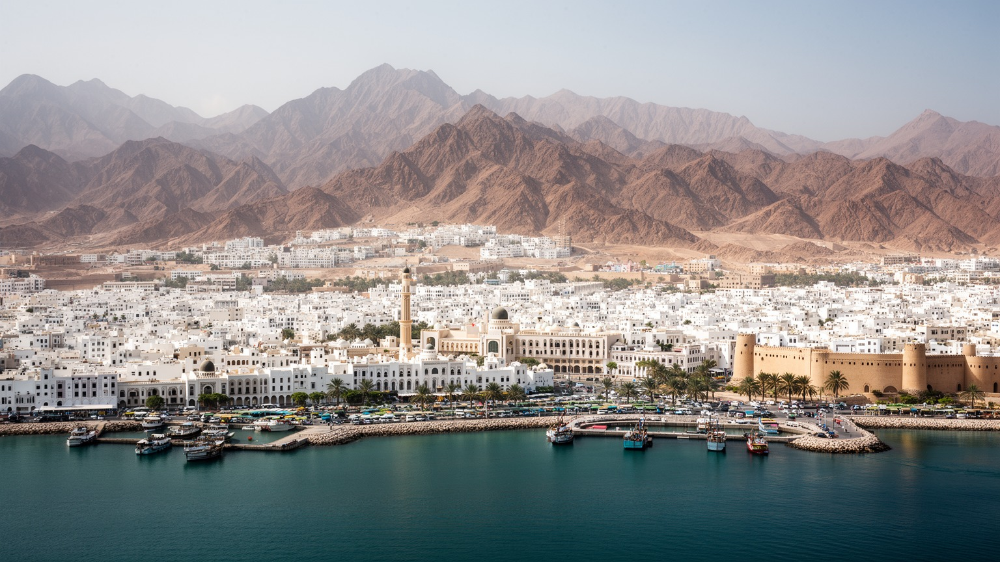
🇴🇲 オマーン / 首都マスカット / World City Atlas
オマーン湾とハジャル山地の狭い地形に沿って伸びる首都です。王宮、省庁、港、スーク、モスク、移民労働、石油後の多角化、海峡外交が、白い低層の街並みの内側で結びついています。
海峡と山の首都
マスカットは、ホルムズ海峡に近い海上交通、王政の中枢、港湾物流、観光、移民労働が重なる首都です。山と海が市街地を細く分け、都市の拡大にも独特の節度を与えています。
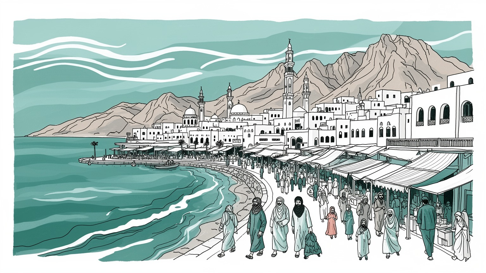
マスカットはホルムズ海峡、インド洋、湾岸協力、イランとの対話、イエメン情勢を見渡す首都です。中立的な外交姿勢と海上交通の安全が、王宮と省庁の判断を日常の港湾都市に結びつけます。海路の緊張も常に意識します。
港湾、行政、観光、建設、金融、物流、石油関連サービスが雇用を支えます。現場には南アジアや東アフリカ出身の労働者も多く、賃金、住居、送金、技能移転が都市経済の重要な論点になります。若者の民間就業も焦点です。
イバード派イスラムの穏健な伝統、スルタン制の儀礼、アラブ、バルーチ、ザンジバル、インド洋商人の記憶が重なります。モスク、スーク、香、海の食文化が、白い街並みの生活を深めていますね。礼節も街の空気です。
住民は自動車、バス、海沿いの道路、郊外住宅を使い分け、暑さと水を意識して暮らします。旅ではマトラのスーク、王宮、要塞、グランドモスク、海岸、山道を近距離で巡れます。夕景は魅力です。海風の時間が似合います。
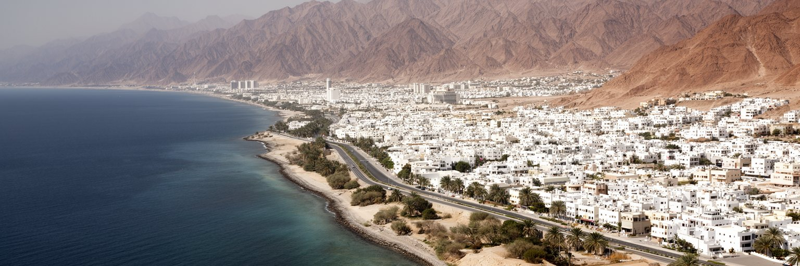
マスカットは、広い平野へ一気に広がる湾岸都市ではありません。オマーン湾とハジャル山地の間に細長く市街地が連なり、入り江、岬、ワディ、岩山が街区を区切ります。旧マスカット、マトラ、ルウィ、クルム、ボウシャル、シーブへと移動すると、同じ首都の中でも港町、行政地区、商業地区、住宅地、空港周辺の表情が変わります。白い低層建築を基調にした景観規制は、超高層で競う湾岸都市とは違う落ち着きを生み、山肌と海を都市の背景として残しています。一方で、地形が限られるため道路は谷筋や海沿いに集中し、通勤、渋滞、洪水時のワディ、郊外拡大が課題になります。暑さの厳しい季節には、歩行者空間より車移動が優位になりやすく、日陰や公共交通の質が暮らしを左右します。海と山の近さは観光の魅力であるだけでなく、防災、水資源、住宅供給、景観保全の条件でもあります。マスカットの都市形態を読むことは、自然の制約を消すのではなく、その制約と折り合いながら首都機能を置く方法を読むことです。海から来た交易の記憶と、山に守られた政治の空間が、同じ道路沿いに続いています。都市の中心が一つの広場に収まらず、湾や谷ごとに分かれるため、住民は複数の中心を使い分けます。この分散した構造が、首都に静けさと不便さの両方を与えています。道の選び方にも地形の影響が出ます。
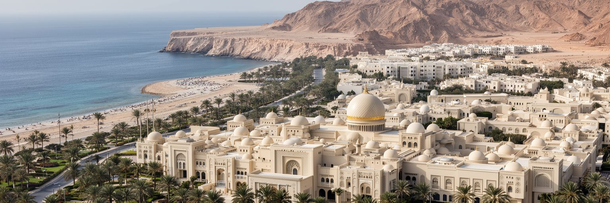
マスカットは、スルタンを頂点とするオマーン国家の政治中枢です。アル・アラム宮殿、省庁、諮問機関、外交団、軍と治安機関、国際会議の場が集まり、国家の方向性はこの首都から発信されます。オマーンは湾岸協力会議の一員でありながら、イラン、イエメン、インド洋、東アフリカとの歴史的なつながりも持ち、対話を重んじる外交で知られます。ホルムズ海峡に近い地理は、エネルギー輸送と海上安全保障を常に政治課題にします。マスカットの外交は、派手な大国対立の舞台ではなく、緊張を和らげる仲介、捕虜交換、人道対話、静かな交渉の積み重ねとして見えます。国内政治では、雇用、補助金、財政改革、若者の期待、地域間の均衡、外国人労働者の管理が重要です。石油収入に頼った国家運営を変えるには、首都で作られる計画が地方の港、工業地帯、観光地、学校へ届く必要があります。マスカットを政治都市として読む時、王宮の美しさだけでなく、安定を維持する行政、住民の声の届き方、地域外交の細い線を見ます。湾岸の中で対話の窓を開き続けることは、港町として外部と生きてきた歴史にも合っています。政治の落ち着きは観光や投資の前提にもなりますが、若者が将来を描ける雇用と参加の場がなければ長続きしません。静かな首都ほど、制度の柔軟さが問われます。行政の信頼は、日々の手続きにも表れます。
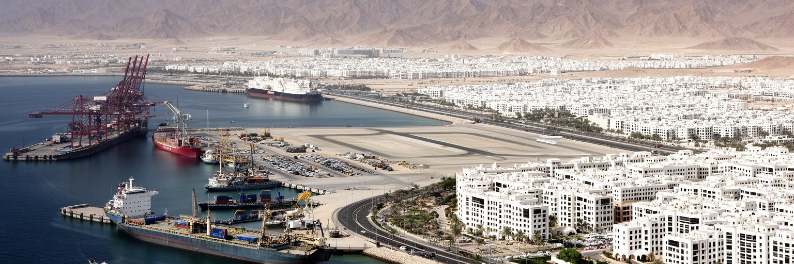
マスカットの経済は、首都行政だけでなく、港湾、石油・ガス関連サービス、金融、建設、観光、商業、物流に支えられています。オマーンの主要な産油・工業拠点は国内各地に分かれますが、契約、規制、銀行、専門サービス、政府系企業、国際企業の窓口は首都に集まりやすいです。マトラ港の商業、スルタン・カブース港の再編、空港、道路網、近隣の物流拠点は、海と内陸をつなぐ役割を持ちます。国家は石油依存を減らすため、観光、物流、鉱業、漁業、製造、デジタルサービスを育てようとしていますが、多角化は計画書だけでは進みません。若いオマーン人が民間企業で働き続けられる賃金や技能、外国人労働者に頼ってきた建設・サービス現場の再編、起業環境、教育の質が問われます。湾岸の富は道路、住宅、商業施設を整えましたが、原油価格の変動は財政と雇用に影響します。港の荷役、ホテルの客室、役所の窓口、郊外の建設現場、送金する労働者、起業する若者が同じ経済を動かしています。魚市場の競り、携帯修理や仕立ての小店、SNSで予約を受けるガイドも都市の収入源です。多角化の成果は観光客数よりも、安定した仕事と技能が都市に残るかで測られます。湾岸市場とインド洋市場の間にある立地は、物流と再輸出にも可能性を与えます。その可能性を生かすには、港だけでなく学校、訓練、金融、労働条件を同時に整える必要があります。
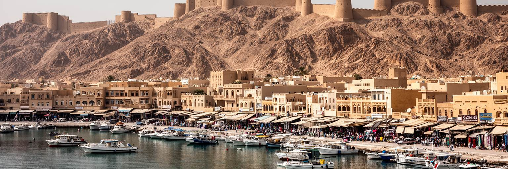
マスカットの記憶を最も濃く感じる場所は、マトラの海沿いと旧市街です。コーニッシュに沿って港、魚市場、スーク、商家、モスク、丘の要塞が並び、インド洋交易の時間が今も都市の匂いとして残ります。乳香、香辛料、オマーン・ハルワ、布、金銀細工、船具、輸入品が行き交った歴史は、オマーンがアラビア半島の端に閉じた国ではなく、ザンジバル、バルーチスターン、インド、ペルシア湾と結ばれていたことを示します。現在のスークは観光客にも開かれていますが、地元の買い物、礼拝、家族の散歩、港湾労働も重なります。旧マスカットの宮殿地区と要塞は国家の象徴であり、マトラの商業空間は市民と商人の記憶です。再開発や観光化が進むと、古い店舗の家賃、生活商業の維持、歩行者の快適さ、港の機能転換が難しくなります。歴史地区を保存するとは、建物の外観だけを残すことではありません。海から来る風、夕方の市場、店主の声、値段を確かめるスマートフォン、近所のモスク、港で働く人の足音まで含めて残すことです。旧市街は、低層の白い景観が美しいだけでなく、インド洋の多文化的な商業世界が湾岸国家の首都に息づいていることを教えます。観光客が土産物を買う同じ通路を、住民は修理や日用品のために歩きます。この二つの使い方が共存してこそ、旧市街は舞台装置ではなく生きた港町であり続けます。
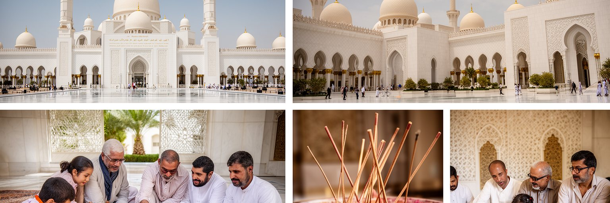
マスカットの文化を理解するには、イバード派イスラムの伝統とスルタン制の儀礼を切り離せません。オマーンでは多数派を占めるイバード派が、共同体の秩序、穏健な宗教実践、近隣との関係に深く関わってきました。スルタン・カブース・グランドモスクは国家の象徴であり、同時に礼拝、教育、観光、国際的な対話の場でもあります。金曜礼拝、ラマダン、犠牲祭、ナショナルデー、結婚式、家族の集まり、香をたく習慣、カフワとデーツでもてなす作法は、都市の日常を整えます。文化は純粋にアラブだけで成り立つのではなく、バルーチ、ザンジバル、インド系商人、南アジアの労働者、東アフリカとの記憶も含みます。海の交易は食、音楽、衣服、家族史に痕跡を残し、夜のオペラハウスや結婚式の歌、車内のラジオにも響きます。一方で、外国人労働者の宗教施設や生活文化は、公式な観光イメージには映りにくいことがあります。マスカットを文化都市として読む時、グランドモスクの壮麗さだけでなく、地区の小さなモスク、家庭の香り、市場の多言語、王室儀礼への敬意、移民の祈りを同じ都市文化として見ます。信仰は観光名所の装飾ではなく、暑い日々の時間を区切り、人々の礼節と支え合いを作る力です。女性の集まり、親族訪問、香や衣装の選び方にも、都市の美意識が表れます。宗教と礼節が公共空間を穏やかに保つ一方で、多様な住民が自分の習慣を尊重される余地も大切になります。
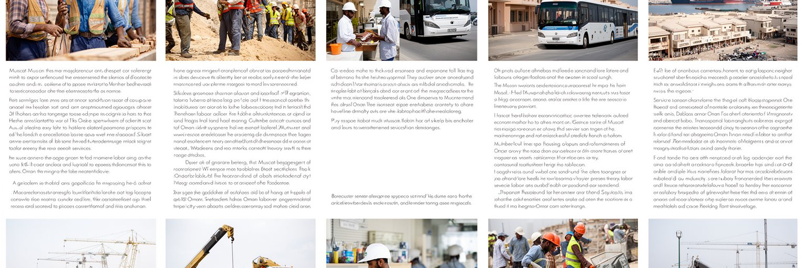
マスカットの暮らしと経済は、外国人労働者の存在なしには説明できません。インド、バングラデシュ、パキスタン、フィリピン、スリランカ、東アフリカなどから来た人々が、建設、清掃、警備、家事、飲食、ホテル、小売、運転、港湾、整備、医療補助などの現場を支えています。湾岸都市では、国籍、職種、雇用主、住居、ビザ制度によって生活条件が大きく変わります。高い技能を持つ専門職もいれば、炎暑の屋外で働き、郊外や労働者宿舎から長時間移動する人もいます。送金は出身国の家族を支え、同時にマスカットの都市サービスを安く保つ仕組みにもなっています。休日には安い食堂、理髪店、送金窓口、携帯ショップがにぎわい、母語のラジオやSNS通話が離れた家族と街を結びます。オマーン人の雇用を増やす政策は重要ですが、移民労働を単に置き換えるだけでは、技能、賃金、労働条件、サービス価格の調整が必要になります。観光客が快適にホテルへ泊まり、住民が清潔な商業施設を使い、建物が建ち、道路が保たれる背後には、多くの見えにくい労働があります。公平な都市として読むには、王宮や海岸の美しさだけでなく、労働者が休める場所、賃金の支払い、労働安全、医療、交通、言語支援を見る必要があります。共同住宅、バス停の混雑、夜食の香辛料の匂いは、公式な観光写真には出にくい都市の現実です。そこを見落とすと、首都を支える労働の厚みは理解できません。
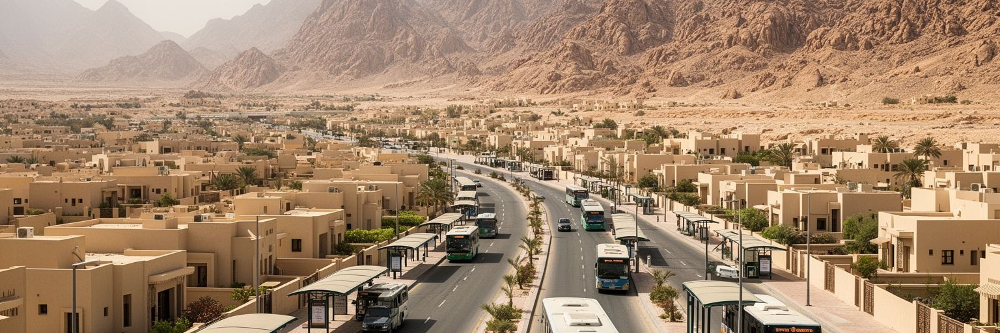
マスカットの日常生活は、暑さ、距離、住宅、車移動に強く影響されます。夏の高温多湿な時期には、屋外を長く歩くことが難しく、学校、職場、買い物、病院、礼拝、余暇の移動は自動車に頼りやすくなります。市街地は山と海に分かれて帯状に伸びるため、近く見える場所でも道路では遠回りになることがあります。オマーン人世帯は比較的広い住宅を求めて郊外へ広がり、外国人労働者や若い単身者は職場に近い集合住宅や共同住宅を選ぶことも多いです。公共バスは整備されつつありますが、停留所の日陰、運行頻度、最終目的地までの歩行環境が使いやすさを左右します。住宅地の拡大は水道、電力、排水、学校、診療所、商業施設への投資を必要とし、ワディの洪水リスクも考えなければなりません。冷房の低い音は生活を守る一方で、電力消費と家計負担を高めます。暮らしは暑さを避ける時間割、家族での車移動、海辺の夕方、モールの涼しさ、職場と住まいの距離で組み立てられています。子どもは学校や屋内遊び場、高齢者は診療所や家族訪問に移動を頼り、夕方にはサッカーやクリケットをする若者も見えます。歩ける日陰や信頼できるバスが増えれば、都市はより多くの人に開かれます。また夕方に人が海辺へ出るのは、涼を求めるだけでなく、街に共有できる時間を取り戻す行為でもあります。
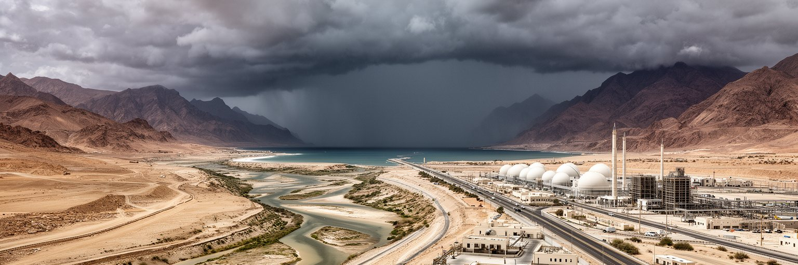
マスカットは乾燥した首都ですが、水の問題は不足だけではありません。年間を通じて暑く乾く季節が長く、生活用水は地下水、淡水化、配水網、節水意識に支えられています。一方で、山地から海へ下るワディは、普段は乾いた谷に見えても、強い雨やサイクロン接近時には急流になり、道路、住宅、低地、港湾施設に被害をもたらします。オマーン湾沿岸はインド洋からの熱帯低気圧の影響を受けることがあり、高潮、豪雨、斜面崩壊、交通遮断への備えが必要です。都市がワディ沿いや低地へ広がるほど、排水、橋、警報、避難、土地利用の判断が重要になります。水辺の景観や海岸観光を楽しむ都市であるほど、水質、海洋ごみ、下水処理、建設による海岸線の変化にも注意が必要です。暑熱は屋外労働者、高齢者、子ども、観光客に健康リスクをもたらし、冷房に頼る生活はエネルギー消費を増やします。マスカットの気候政策は、大規模インフラだけではなく、街路樹、日陰、断熱、涼しい公共施設、労働時間の管理、洪水時の情報共有として日常に現れます。乾いた都市で急な水害が起きるという矛盾は、この首都の地形をよく示しています。水を作り、水を逃がし、海を守ることが、同じ都市計画の焦点です。雨が少ない都市ほど、降った時の水をどこへ流すかが住民の安全を決めます。ワディを埋める開発と、自然の排水を尊重する計画の違いは、災害時にはっきり表れます。
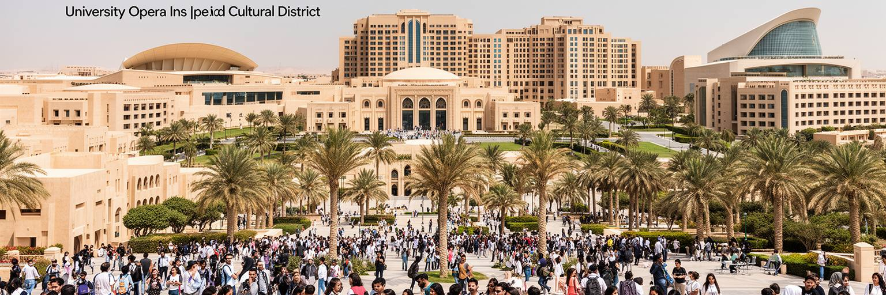
マスカットは、オマーンを外へ見せる窓口でもあります。スルタン・カブース大学や各種高等教育機関、博物館、オペラハウス、国際ホテル、空港、会議施設、文化イベントが、国家の近代化と穏健なイメージを支えています。観光政策では、超高層や人工島で競うより、山、海、砂漠、砦、スーク、香、海洋史、落ち着いた治安を組み合わせる方向が強いです。マスカットのホテルや文化施設はその入口になり、旅行者はここからニズワ、ジャバル・アフダル、ワヒバ砂漠、スール、ドファールへ向かいます。教育面では、若い世代が公共部門だけに頼らず、観光、物流、デジタル、環境、医療、起業で働ける技能を得ることが重要です。国家ブランディングは、空港の清潔さやモスクの壮麗さだけでは成立しません。旅行者と住民が市場で出会い、ガイドや職人に収入が残り、文化が消費物になりすぎず、若者が語学と専門性を使える時に力を持ちます。学生はSNSで店や海辺の予定を共有し、家族は祝祭日の公園やサッカー観戦で余暇を過ごします。穏やかで安全な湾岸の首都という印象を保ちながら、石油後の人材育成と観光収入を結びつける試みが進みます。その成否は、教育が仕事に届くか、観光が地域文化を尊重するかにかかっています。文化施設が見栄えのする建物であるだけでなく、学生や家族が日常的に使える場所になることも重要です。学びと余暇が近づくほど、首都の魅力は旅行者向けの演出を超えて深まります。
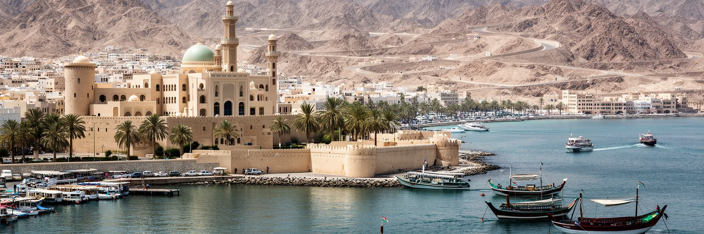
マスカット観光の魅力は、王宮やモスクを見て終わることではなく、海の道と山の地形を体で理解できる点にあります。朝にスルタン・カブース・グランドモスクを訪れ、昼に国立博物館や旧マスカットの要塞を歩き、夕方にマトラのコーニッシュとスークへ向かうと、国家の儀礼、交易の記憶、日常の買い物が一日の中でつながります。海沿いではダウ船、漁港、クルーズ船、遊覧船、海岸道路が見え、少し郊外へ出れば岩山、ワディ、ビーチ、ダイビングの海へ近づけます。観光客は暑さ、服装、礼拝施設での作法、写真撮影、移動距離に配慮する必要があります。マスカットは派手な夜景だけで売る都市ではなく、朝夕の光、白い建物、山影、香の匂い、スークの会話、海風の組み合わせで印象を作ります。観光はホテル、交通、飲食、工芸、ガイドに収入をもたらしますが、旧市街の生活商業を押し出さない配慮も必要です。短い滞在でも、港、王宮、モスク、市場、海岸、山道を順に見ると、オマーンがインド洋とアラビア半島を結ぶ国であることが分かります。旅の価値は名所の数ではなく、海から来た歴史と現在の首都生活が同じ景観に重なることにあります。ゆっくり歩くほど、静かな外交都市の奥行きが見えてきます。夜の市場で香を選び、朝の魚市場で水揚げを見れば、観光は消費だけでなく都市の時間に触れる経験になります。海辺の礼節を守ることも、旅の質を高めます。
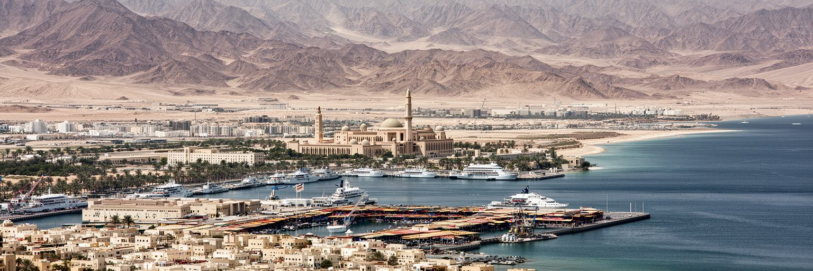
マスカットは、人口や高層ビルの規模で世界都市を競う場所ではありません。それでも重要なのは、ホルムズ海峡に近い海上交通、湾岸の資源経済、インド洋交易の記憶、穏健な外交、石油後の多角化、移民労働、乾燥地の水管理が一つの首都に集まるからです。白い低層の街並みは落ち着いて見えますが、その内側には若者の雇用、外国人労働者の生活、財政改革、住宅拡大、車依存、暑熱、サイクロン、観光化の課題があります。王宮とグランドモスクは国家の安定を象徴し、マトラのスークは交易の柔軟さを伝え、郊外の道路と住宅地は現代の暮らしの距離を示します。マスカットを読む時は、湾岸の富をただ称えるのではなく、その富をどのように仕事、教育、公共空間、環境、安全へ変えるのかを見ます。オマーンは派手な対立を避け、対話と均衡を重んじてきましたが、都市の中でも同じ姿勢が求められます。伝統を守りながら、移民を含む多様な住民が尊厳を持って働き、暑さの中でも移動しやすく、海と山を損なわずに成長できるかが問われています。静かな港の首都は、二一世紀の湾岸都市が速さだけでなく節度を持てるかを考えさせます。海峡の近さは世界との接続であり、山の近さは成長への限界を知らせる目印です。白い建物の秩序が美しく見えるほど、その背後にある労働、移動、水、外交の複雑さも見逃せません。マスカットは小さく静かな首都でありながら、湾岸とインド洋の未来を読むための濃い手がかりを持っています。